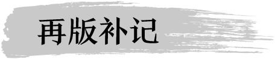

苦蒿煮水洗澡，专祛湿热之毒
南方有些地方，端午节习惯用艾蒿来给小孩泡澡，说是洗了夏天不长痱子和疹子。其实，还有一种更好的选择，就是苦蒿。
小时候一到夏天，母亲经常采苦蒿来给我们洗澡。
现在的很多朋友可能不太熟悉苦蒿这个名字。其实它漫山遍野都长着，是一种随处可见的野草。听说现在市场上有人拿它当作艾蒿卖，这可太误人了。苦蒿和艾蒿的作用差别很大。
区别艾蒿和苦蒿的方法是：艾蒿比较矮小，长满白色的茸毛，叶子直接长在主茎上，不分杈。苦蒿是深绿色的，比较高大，能长到一米多高。两者从外观上还是很容易分辨的。
苦蒿也是药。但是它的性质与艾蒿不太一样。艾蒿是热性的，苦蒿是寒性的。艾蒿可以散寒，而苦蒿是清热的。
苦蒿和艾蒿一样都含有挥发油，二者都能够清洁皮肤、祛除湿毒、杀虫止痒，可以调理皮肤病，比如湿疹、疥癣、疮疡。但新鲜艾叶有刺激性，而新鲜苦蒿更平和，给小孩用效果更好。
艾蒿和苦蒿祛湿气的作用都很强，但寒热截然相反，一定要分清楚。艾蒿祛湿寒，而苦蒿祛湿热。
热盛为毒，苦蒿不仅可以祛除一般的热，而且可以解热毒。而且它既能入里，又能出表，不论热毒是蕴积在皮肤，还是已经深入血脉骨髓，苦蒿都可以将之逐出。
比如，疟疾就是中医认为的一种深入血脉骨髓的热毒。因此中医一向使用苦蒿来治疗疟疾。
小孩是阳性体质，皮肤有病往往是湿热化毒所致，最适合用苦蒿。苦蒿调理小儿湿疹、过敏和长痱子的效果很好。
用苦蒿煮水泡澡
做法：1.采一大把新鲜的苦蒿，加一锅水煮。
2.水开后煮5〜10分钟，然后连水带叶子一起放入澡盆里泡浴。
3.泡的时候，用煮过的苦蒿叶子在患处擦洗。
4.泡好后，不要用清水冲洗，直接用毛巾擦干，才能让药性充分吸收。
前几天，一位朋友来问：别人给我推荐一个现在流行的减肥偏方，用苦蒿煎水喝，据说一个月能减好几斤体重，我可以用吗？我说：苦蒿是清热毒的，如果不是内火非常重的人，每天喝这样的寒凉药，马上就会伤胃。胃一伤，消化变差，短时间内人可能会瘦，但那不是健康的减肥，而是营养不良。
苦蒿煎水的味道十分苦涩，一般人很难喝得下去。但我也知道，许多人为了减肥，其毅力是十分惊人的，别说味道苦不苦，就算损害身体健康也在所不惜。
的确可以用苦蒿少量煎水当药喝，有很强的降火和解毒作用，能缓解疟疾等传染病后期低烧不退、夜晚浑身燥热等病症。但苦蒿毕竟是药，没有咨询医生最好不要轻易内服。
北京多的是苦蒿。只要有一片野地，就能看到疯长的苦蒿，甚至在市中心也能够见到。协和医院在王府井旁边有一片地，前些年没开发的时候，一半做了停车场。五月份几场春雨过后，没停车的那一半地，长出了大片的苦蒿，直有一人多高，煞是壮观。在高楼林立的商业街，能长出这样一片迷你丛林，看来苦蒿的生命力还真是顽强。
艾蒿应该也是生命力很顽强的东西吧。可惜它的名气太大了。再怎么顽强，也经不住商业化的采摘。而苦蒿因为少有人问津，反而能随意生长。寂寞，有时候也不是一件坏事。
若是苦蒿出了名，进而被不加节制地采摘，是好事，还是坏事呢？为了不误人，也为了给后世的子孙留下些许踏青寻药的乐趣，想想还是让苦蒿继续寂寞下去吧。

1.今年端午节前后，坚持给女儿用苦蒿泡了7天澡，效果真的很好，今年愣是没长一个痱子。女儿5岁了，过去的四年，一到夏天，女儿前胸后背脖子全是痱子，奇痒，心疼！谢谢陈老师分享那么好的方法，太好用了，谢谢，感恩！——时光星城
2.我用陈老师推荐介绍的用苦蒿煮水来洗澡，坚持了一个礼拜，去除了身上烦人的湿疹，效果特别好，点赞！ ——凌波微步

问：老师，大人能不能用艾蒿和苦蒿混在一起煮水泡澡呢？
允斌答：可以的。

青蒿素是从苦蒿里提炼出来的
因为诺贝尔奖，一夜之间治疗疟疾的青蒿素出了名。提取青蒿素的植物，学名叫作黄花蒿，也就是苦蒿。